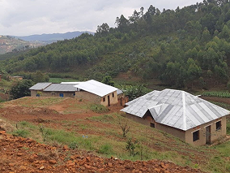
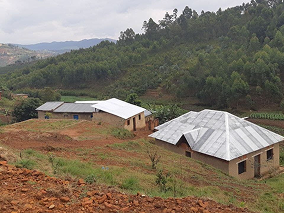

De patria a patria
Un viaje épico de Kentucky a Burundi paseando por Gales y Ucrania

Conoce un poco mejor los lugares de los que proceden tus colegas en línea
Todo ser humano es un artista, un ser de la libertad, llamado a participar en la transformación y reforma de las condiciones, el pensamiento y las estructuras que conforman e influyen en nuestras vidas.
La ciudad de TripleTen ha reunido a profesionales de diferentes rincones del mundo. Hoy, la Galería de Arte TripleTen se enorgullece de presentar historias y fotografías de algunas de las personas que dedican su tiempo y esfuerzo a hacer que los futuros profesionales de la tecnología de esta ciudad se sientan como en casa. Cada uno de nosotros tiene una historia única sobre el lugar del que procede. No dudes en añadir a nuestra colección tu propia historia y una obra de arte visual dedicada a tu ciudad natal. No importa de dónde seas, nos alegra que seas nuestro vecino.


 

Cricieth, Gales
Artistas
Steffan Warren, editor jefe
Kseniya Glagoleva, gerente de proyectos
Las ruinas medievales del castillo de Cricieth dominan la ciudad desde una roca que extiende sobre el mar. Se cree que fue construido por Llewelyn el Grande en el S. XIII. 800 años después, la autodenominada Perla de Gales en las costas de Snowdonia, se ha convertido en un popular destino turístico durante los meses de verano.
A pocos pasos de camino al castillo, puedes disfrutar de los mejores helados del mundo en Cadwalader's, cuyo ingrediente secreto se rumorea que son algas marinas de la localidad. Otra cosa por la que es famosa Cricieth es por haber ganado el premio *Gales en flor* durante cinco años seguidos por sus espectaculares muestras florales alrededor de la ciudad. También vio nacer a David Lloyd George, el único galés que ha sido Primer Ministro del Reino Unido.
Berea, EE.UU.

Artistas
Travis Turner, autor y editor
Berea es una pequeña ciudad ubicada en la parte central de Kentucky. La ciudad está rodeada por hermosos bosques y campos. Es conocida como la capital de la artesanía del estado, y sus visitantes hallarán infinitas posibilidades para ir de compras: tiendas de joyas, velas y artículos de madera artesanales; galerías, talleres de vidrio y más. La ciudad celebra un festival anual que rinde tributo al "spoonbread", un platillo local hecho de pan de maíz y que se sirve con una cuchara de madera.
Aunque, probablemente es mejor conocida por su universidad. El Berea College fue fundado en 1855 y fue la primera universidad sureña integrada racialmente, así como la primera en ser coeducacional. Algo que en cierta manera la hace única, es que no cobra colegiatura: cada estudiante recibe una beca del 100%.
Muramvya, Burundi

Artistas
Grevisse Kenguruka, editor técnico
Muramvya es una de las 18 provincias de Burundi. Durante la época del reino, Muramvya fue su capital; y en 2017, gracias a su paisaje cultural y natural, se añadió a la Lista provisional de patrimonio mundial de la UNESCO. Se encuentra ubicada en el centro de Burundi, entre las capitales política y económica del país.
Su clima es más bien frío durante la noche, pero durante el día, podrías pensar que estás en el paraíso. A sus 2,665 metros (8,743 ft) sobre el nivel del mar, el Monte Teza es uno de los lugares más fríos de la provincia. Pero es justo esa brisa fresca la que da pie a una de las más grandes plantaciones de té y café del país, y que representa la mayoría de las exportaciones de Burundi.
El Parque nacional de Kibira, una de las mayores reservas de vida silvestre para los simios, ocupa parte de cuatro provincias, incluyendo Muramvya. Este parque nacional se encuentra en las cúspides de las hermosas montañas de la Divisoria Congo-Nilo, cuyas alturas oscilan entre 1,550 y 2,660 metros. Está lleno de hermosa vegetación, y es una fuente para los diversos ríos y arroyos que proporcionan agua alrededor del país.
Bogotá, Colombia
Artistas
Desconocido
Bogotá es la extensa capital en altura de Colombia. La Candelaria, su centro con adoquines, cuenta con sitios coloniales como el Teatro Colón neoclásico y la Iglesia de San Francisco del siglo XVII. También alberga museos populares, incluido el Museo Botero, que exhibe arte de Fernando Botero, y el Museo del Oro, con piezas de oro precolombinas.
Es la tercera capital más alta del mundo (después de La Paz y Quito), ya que se encuentra a un promedio de 2625 metros sobre el nivel del mar. Está ubicada en el centro de Colombia, en la región natural conocida como la sabana de Bogotá, que forma parte del altiplano cundiboyacense, formación ubicada en la cordillera Oriental de los Andes.
Según la clasificación climática de Köppen la ciudad posee el clima templado isotérmico Cfb (a veces considerado Csb). A causa de su gran altitud, Bogotá tiene un clima de montaña; por su baja latitud presenta una escasa oscilación térmica a lo largo del año. Las temperaturas regularmente oscilan entre los 5 y 19 °C, con una media anual de 13.7 °C. Debido a su ubicación cerca del ecuador, cuenta solo con cuatro temporadas principales: dos de lluvia y dos estaciones secas, la precipitación es abundante de marzo a mayo y de octubre a noviembre, coincidiendo casi con los equinoccios de primavera y otoño del hemisferio norte, respectivamente, debido a que el sol cruza por la línea ecuatorial y la radiación solar es mayor, aumentando el calor en la selva y favoreciendo la formación de tormentas en la zona cordillerana.